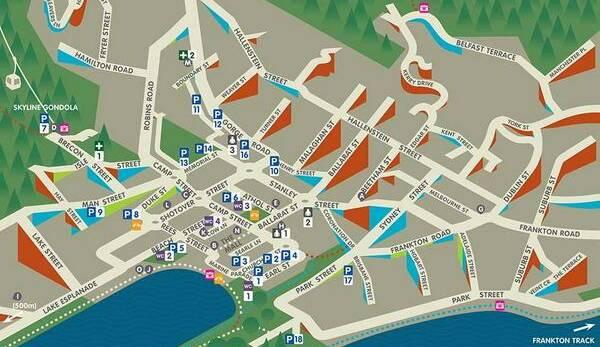

HansF
http://blog.systemed.net/post/10
I originally finished this post with “I don’t expect to see a revival any day soon”, but the day after I posted this, Sustrans Midlands retweeted a link to exactly such a map. This ‘Accessible Map’ of Queenstown, New Zealand, was particularly intended for wheelchair users and other people who find steep slopes challenging.
